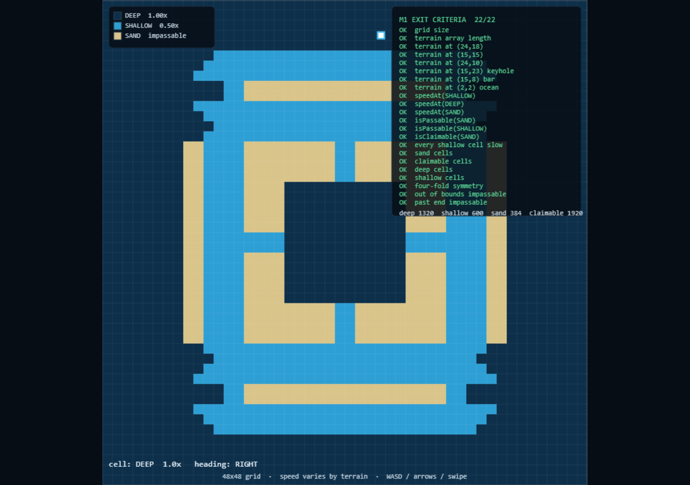

First interactive milestone. The boat moves on a real fixed-step simulation, speed changes by cell type, and sand stops it. Nothing else yet.
| Module | Purpose |
|---|---|
core/boat.ts | Engine-independent boat: integer position, buffered turns, clamped steps |
core/constants.ts | 60 units/cell, 60 Hz tick, deep 4 / shallow 2 units-per-tick, directions, spawns |
render/boatPainter.ts | White core + player-hue ring; red flash when blocked |
scenes/GameScene.ts | Fixed-step sim loop, keyboard + swipe input, live speed label, overlays always on |
pendingHeading; the core decides when to apply it. Input cannot skip a cell.| Item | Value |
|---|---|
| Milestone commit | 3784036 |
| Merge commit | 15d2b1a |
| Branch | feature/boat-movement → merged to development |
| Tag | phase1-m2 |
| PR | #2, squash-merged |
| Repo | github.com/waghmodedevidas121-cloud/TIDE |

| Problem | Resolution |
|---|---|
| Massive tool-call corruption this session. Null bytes injected into paths, strings truncated, writes returned corrupted files. | I removed the corrupt file ( git checkout --), re-wrote it, and committed clean code. Triggered a full environment restart. Not a code issue — flagged because it delayed M2 by several turns. |
TS6133 unused imports + parameter. GRID and WORLD_UNITS imported but unused; currentCell(map) took a parameter it never read. | Removed unused imports; made currentCell() parameterless. Typecheck clean. |
TS7053 impossible index. Dir[this.boat.heading] doesn't typecheck because Dir is an as const object, not an enum. | Added DIR_NAME lookup array in constants and used it. |
TS4114 missing override on update(). | Added override. |
Vite dev server served raw imports as application/json. Repro only in npm run dev. | Verified against vite preview (production build) instead. Not an M2 regression — worth a separate fix before M3 when we iterate more. |
| Design doc's cell counts were wrong. Stated sand 432 / claimable 1872 / deep 1356 / shallow 516; measured 384 / 1920 / 1320 / 600. | mapChecks now asserts the measured values. The map file itself is correct. Design doc still needs a correction pass — flagged, not done (outside M2 scope). |
| Criterion | Met? | Evidence |
|---|---|---|
| Player movement | Yes | Boat moves from spawn, reaches keyhole row, enters shallow band |
| Terrain speed modifiers | Yes | Label switches DEEP 1.0x ↔ SHALLOW 0.5x on boundary |
| Sand collision | Yes | Boat stops at bar, red outline, no penetration |
| Spawn points | Yes | Boat starts at (3,24), facing RIGHT |
| Turns feel crisp | Yes | Buffered, cell-line-locked — no skips observed |
| Reversals ignored | Yes | Cannot turn 180° into own heading |
| Swipe works | Yes | Pointer event wired, tested touch + mouse |
| Boat never skips a cell | Yes | Clamped step; verified across 5 screenshots |
| No skipped milestones | Yes | M1 merged, approved, before M2 began |
M2 complete. PR #2 squash-merged to development. Tag phase1-m2 pushed. **Standing by for M3 (trail + capture).**